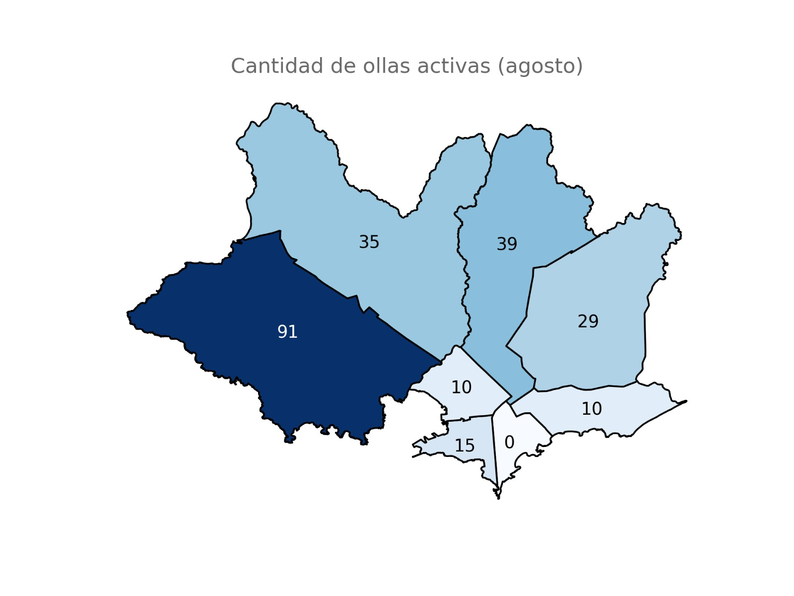
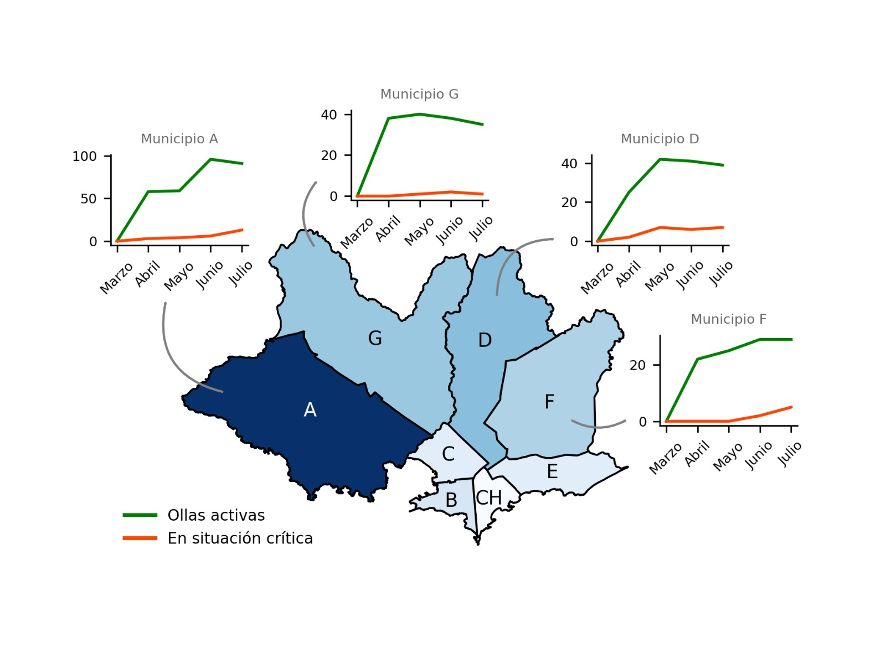

<h1>Relevamiento de ollas activas por municipio</h1>

<h2>Montevideo y Área Metropolitana</h2>

<div>


</div>

<ul class="post-content">
<li><a href="relevamiento/informe_julio.pdf">Descargar informe de situación (Abril-Julio)</a></li>
<li>Para colaborar con el relevamiento comunicarse al 092555425</li>
</ul>

